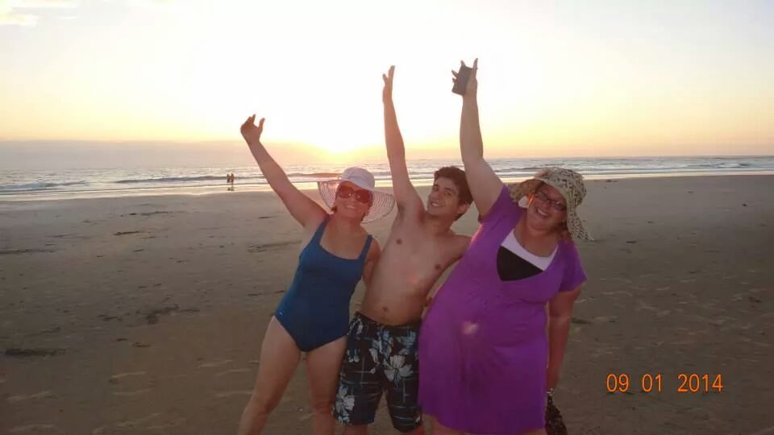
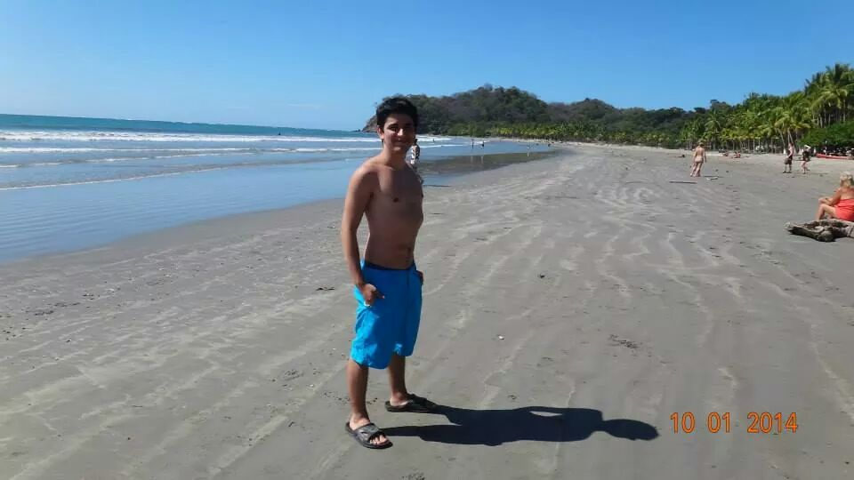

Rafael Rodríguez Arguedas
Mobile developer, chemist, world traveler, otaku
Mobile developer, chemist, world traveler, otaku
I'm a computer science major from MIT, member of the class of 2015. I also received minors in chemistry (almost major) and Japanese. I recently moved to Tokyo, where I work at a cool startup called Tamecco. Before coming here, I lived in the Bay Area and worked for Yelp as an Android developer.
Since I was in elementary school, I was immersed in the exciting world of academic olympiads. I participated and earned medals in several regional and international math, physics, chemistry and geography olympiads, and eventually I also became a tutor and trained fellow students for some years. I enrolled in college as a chemistry major at the University of Costa Rica, and did a lot of research and crazy chemistry experiments. Two years later I was admitted at MIT as a transfer student, where I decided to pursue a computer science major as well. At MIT, I spent three years participating in projects, competitions and hackathons, and programming in a bunch of different languages. During summer vacation, I enrolled in internships at Disney and Toshiba in Japan, where I worked building mobile apps and performing mobile network simulations.
I'm passionate about geography, and I'm especially interested in everything regarding Latin American and Japanese cultures (I dance salsa and watch tons of anime!) I used to participate in karate and chess competitions, and now I spend my free time dancing and meeting people.
I deeply care about the daily struggles in the developing world. I'd like to get more involved in building technologies to address poverty, education and environmental issues, across continents.
Contact me at rafaelroar2@gmail.com
Class of 2015. Bachelors degree. Major in computer science. Minor in chemistry and Japanese
Visiting Student, Department of Chemistry
Former chemistry, physics and mathematics major
Former industrial chemistry major
Former business administration and management major
My lovely high school <3
Improving Tamecco's proprietary Android and iOS apps
Implemented new features and fixed bugs as a member of the Android Mobile and Transaction Growth teams
Developed, tested and improved protocols for reliable mobile peer-to-peer multicast using NS-3
Helped students enrolled in Introduction to EECS (6.01) and Computation Structures (6.004)
Built an Android game called Hippomonsters with the Information Ecology Group to display and test the functionality of the local content sharing platform ShAir
Developed a game application called My Dear Stitch for Disney mobile handsets
Synthesized and characterized Metal-Organic Frameworks (MOFs) and metal clusters to attain functional materials for energy storage and catalysis at the Dinca Lab
Analyzed silicon surfaces modified with copper and manganese clusters using a variety of electrochemical and surface characterization techniques
Synthesized and characterized organic ligands and metallic complexes for magnetic coupling analysis
Helped students competing in regional and international math competitions
Helped students competing in regional and international chemistry competitions
Team project for 6.670 that was first place at the MIT iOS game development competition! It's a game about a spaceship orbiting planets and traversing galaxies in order to collect all the star pieces scattered throughout the universe. It was released in the App Store in February of 2015, click here to download it.
Check out a demo here:
My first iOS project built for 6.670. It's a simple game about protecting little insects from voracious carnivorous plants.
My first web project. It's a simple chat built for 6.470, the MIT web programming competition. Register and check it out at rafaroar.scripts.mit.edu
First place - MIT iOS Game Development Competition, 2014
Gold medal - 42nd International Chemistry Olympiad, IChO, 2010
Bronze medal - 50th International Mathematical Olympiad, IMO, 2009
Honorable mention - 49th International Mathematical Olympiad, IMO, 2008
Silver medal - 21st Asian Pacific Mathematical Olympiad, APMO, 2009
Silver medal - 14th Iberoamerican Physics Olympiad, OIbF, 2009
Gold medal - 13th Iberoamerican Physics Olympiad, OIbF, 2008
Gold medal and special recognition - 13th Iberoamerican Chemistry Olympiad, OIAQ, 2008
Gold medal - 12th Iberoamerican Chemistry Olympiad, OIAQ, 2007
Gold medal - 11th Iberoamerican Chemistry Olympiad, OIAQ, 2006
Bronze medal - 10th Iberoamerican Chemistry Olympiad, OIAQ, 2005
Bronze medal - 7th Central America and the Caribbean Mathematical Olympiad, OMCC, 2004
Certificate of excellence - 4th International Geographic Olympiad, 2001



